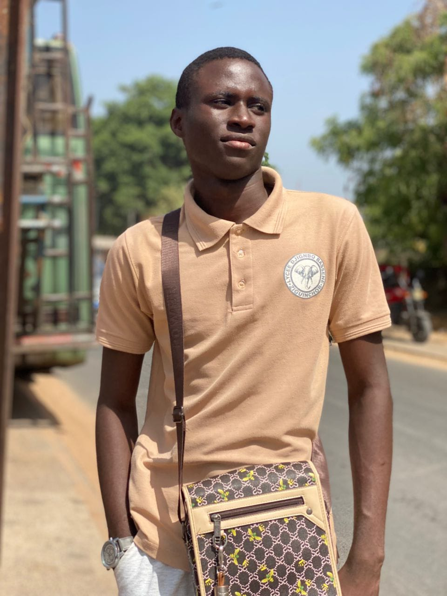

Créativité • Agriculture • Évolution
Je suis THIAMASS, étudiant et créateur. J'apprends, j'expérimente et je construis progressivement mes projets autour de l'agriculture, de l'écriture et de la créativité.
Découvrir mes projets
Je suis THIAMASS, étudiant et créateur. À travers mon parcours, je cherche à apprendre, expérimenter et construire des projets qui ont du sens. Je m'intéresse particulièrement à l'écriture, au développement personnel et à l'agriculture biologique et écologique, un domaine dans lequel je vais poursuivre mes études.
Je m'apprête à commencer mes études en agriculture biologique et écologique. Une nouvelle étape de mon parcours, que je souhaite construire progressivement.
Commencer mon parcours en agriculture biologique et écologique, apprendre progressivement et construire une solide expérience dans ce domaine.
Développer mes connaissances et découvrir les possibilités offertes par une agriculture plus durable et respectueuse de l'environnement.
Continuer à créer, apprendre et transformer mes idées en projets concrets au fil de mon évolution.
Un projet d'écriture consacré à la confiance en soi, aux doutes et au dépassement de soi.
En savoir plusUn domaine que je vais étudier et explorer, avec un intérêt particulier pour une agriculture durable et respectueuse de l'environnement.
Des idées, des textes et différents projets créatifs qui évoluent avec moi.
Une idée, un projet ou simplement envie d'échanger ?
M'écrire 💬 Me contacter sur WhatsApp